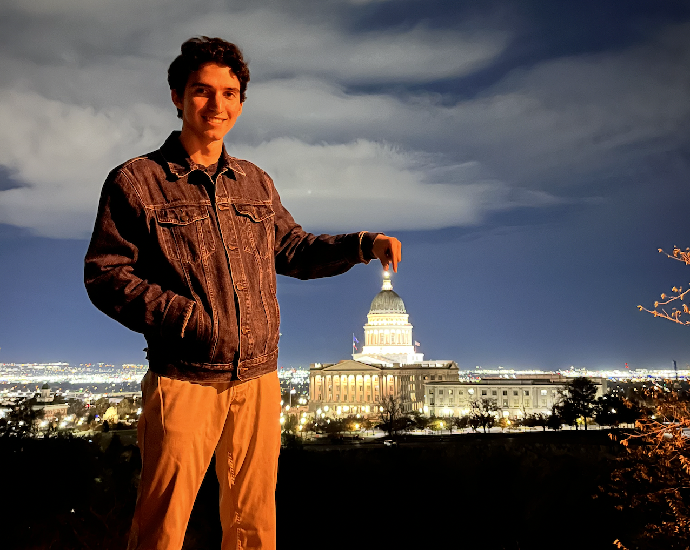

Jofred Gonzalez
4th yr CS undegrad @ U Texas Rio Grande Valley
Links and more!

I'm currently working on socio-technical research involving the Python Packaging Index at CMU under Dr. Bogdan Vasilescu. I mostly code using Python, but I'm also interested in Rust and Java(Type)Script.
I acknowledge my friend couldn't frame the photo properly.